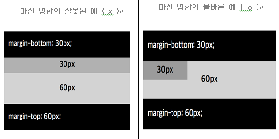

padding과 마찬가지로 축약하여 사용할 수 있고, 상하 좌우 에 대해서 값이 같으면 하나로 축약하여 사용 가능
margin에서는 수치 외에 auto 값을 사용 가능.
margin auto
- 기본적으로 브라우저에 의해 계산이 이루어지는데, 대부분의 경우 0(기본값) 또는 요소의 해당 측면에서 사용 가능한 공간과 같은 값을 가진다.
이를 활용하여 수평 중앙 정렬을 할 수 있습니다.
- 좌우의 margin이 모두 auto로 적용 되었다면, 브라우저는 요소가 가질수 있는 가로 영역에서 자신의 width를 제외한 나머지 여백에 크기에 대해 균등 분할 하여 적용하며 이에 따라 요소는 수평 중앙 정렬이 된다.
- 상하의 경우 수직 중앙 정렬이 되지 않으며, 기본적인 플로우를 벗어나는 상황에 대해서 적용이됩니다.
- 마진 병합은 수직 방향으로만 이루어지며, 좌우에 대해서는 발생하지 않음
- 마진 병합은 반드시 맞닿아야 발생하기 때문에 2, 3번째의 경우 padding 및 border가 없어야 한다.

마진 병합을 활용하여 첫 번째와 두 번째 컴포넌트의 조합이 다양한 경우 여백을 다르게 활용 가능